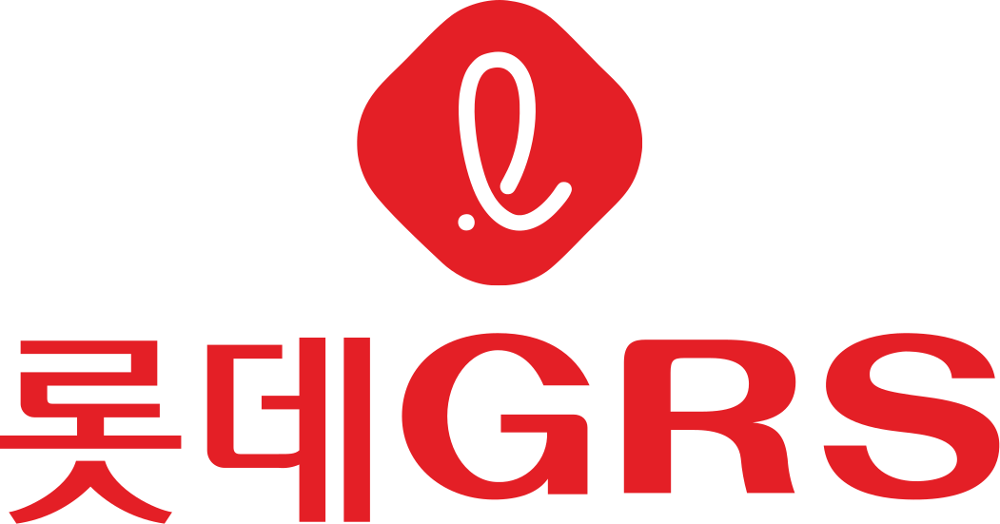
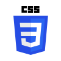
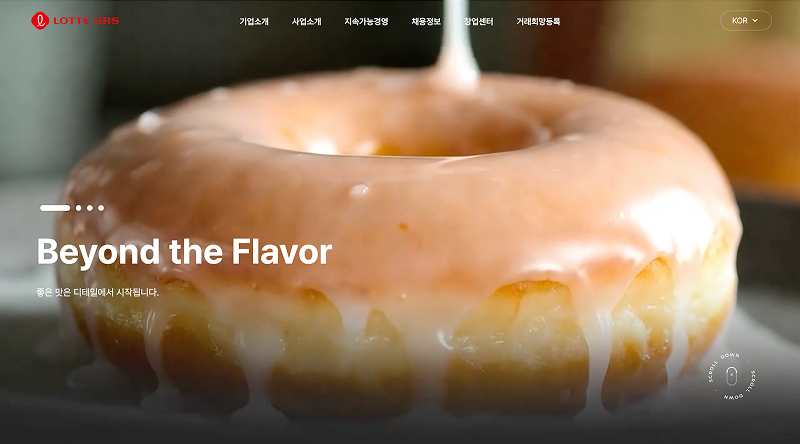
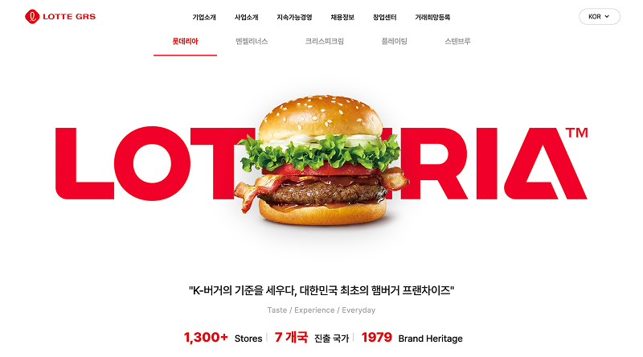
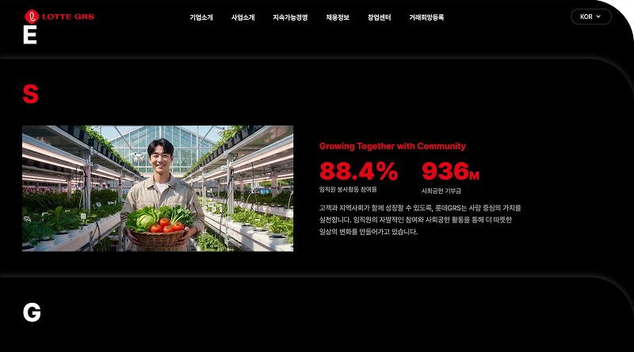
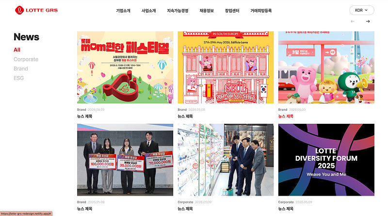

정보 탐색 니즈
- 목적별 메뉴를 통해 창업·채용·ESG 정보를 빠르게 찾고 싶음
- 브랜드별 핵심 가치와 최신 소식을 한눈에 비교하고 싶음
- 복잡한 기업 정보를 짧은 흐름 안에서 이해하고 싶음
브랜드 경험을 선명하게 정리한 반응형 메인 페이지
웹페이지 리뉴얼 개인 프로젝트

01.Over view
롯데 GRS는 롯데리아, 엔제리너스, 크리스피크림 도넛 등 다양한 F&B 브랜드를
운영하는 대한민국 대표 외식 프랜차이즈 기업 입니다.
기업의 비전과 브랜드 가치를 효과적으로 전달하고, 사용자 중심의 디지털 환경을
구축하여 브랜드 영향력을 강화 하고자 웹사이트를 리디자인 하였습니다.
02.Problem Analysis
기업 규모에 비해 정적인 정보 중심 구조로 구성되어 있어 브랜드의 규모감과 매력이 충분히 전달되지 않았습니다.
다양한 브랜드를 운영하고 있지만 각 브랜드의 개성과 스토리를 경험할 수 있는 요소가 부족했습니다.
ESG, 채용, 창업 등 핵심 정보가 분산되어 있어 원하는 콘텐츠를 빠르게 찾기 어려웠습니다.
기업 정보 제공에 집중되어 있어 사용자의 관심을 유도할 수 있는 인터랙션과 몰입 요소가 부족했습니다.
03.Target Persona
“신뢰할 수 있는 브랜드와 함께 성공적인 창업을 준비하고 싶어요.”
“좋아하는 브랜드에서 성장하며 커리어를 쌓고 싶어요.”
“기업의 성장뿐 아니라 사회적 가치를 함께 응원하고 싶어요.”
04.Design System
롯데 GRS의 브랜드 아이덴티티를 상징하는 컬러로, 외식 산업에 대한 열정과 브랜드의 에너지를 표현하며 핵심 콘텐츠에 대한 집중도를 높입니다.
기업의 신뢰감과 전문성을 전달하는 컬러로, 브랜드의 무게감과 프리미엄 이미지를 강화합니다.
정보 콘텐츠의 가독성을 높이고, 주요 컬러 간 균형을 유지하여 안정적인 사용자 경험을 제공합니다.
Pretendard
명확한 정보 전달과 뛰어난 가독성을 바탕으로 다양한 디바이스 환경에서도 일관된 사용자 경험을 제공할 수 있도록 적용하였습니다.사이트 전반에 사용되는 핵심 UI 요소를 정리하여 일관된 사용자 경험과 효율적인 인터페이스 운영이 가능하도록 설계하였습니다.
04. Wire Frame


05. Site Map 개선안


06. PROJECT GOAL
롯데 GRS의 브랜드 가치와 핵심 콘텐츠를 사용자 중심으로 재구성하여 보다 직관적이고 효과적인 디지털 경험을 제공하는 것을 목표로 하였습니다.


브랜드의 경험을 연결하여
더 나은 가치를 만듭니다.
브랜드 스토리와 기업 철학을 시각적으로 강화하여 롯데 GRS만의 브랜드 경험을 효과적으로 전달합니다.
정보 구조를 개선하고 콘텐츠 접근성을 높여 사용자가 원하는 정보를 빠르게 탐색할 수 있도록 합니다.
ESG 활동과 성과를 체계적으로 전달하여 기업의 신뢰도와 지속가능성을 강화합니다.
창업·채용 등 주요 비즈니스 콘텐츠의 접근성을 높여 사용자 행동을 자연스럽게 유도합니다.
07. Publishing & Development
반응형 웹으로 구현하여 다양한 디바이스 환경에서도 일관된 사용성과 브랜드 경험을 제공하고자 하였습니다. 인터랙션과 콘텐츠 기능을 직접 개발하여 완성도 높은 서비스를 제작하였습니다.


08. Tools

CSS309. Key Features
브랜드 경험을 사용자에게 효과적으로 전달 할 수 있도록 핵심 기능을 구현 하였으며, 직관적인 인터랙션과 정보 구조를 통해 사용성과 콘텐츠 접근성을 개선하였습니다.

영상 기반 히어로 슬라이드를 구현하여 브랜드 메시지를 효과적으로 전달하였습니다.

브랜드별 탭 인터랙션을 통해 콘텐츠를 직관적으로 탐색할 수 있도록 구성하였습니다.

ESG 콘텐츠를 카드 형태로 구성하여 주요 정보를 쉽게 확인할 수 있도록 설계하였습니다.

카테고리 필터와 슬라이더 기능으로 뉴스 콘텐츠 탐색 효율을 높였습니다.
10. As is & To be
기존 사이트의 한계를 개선하고 브랜드 아이덴티티와 사용성, 정보 구조를 강화 하여 더 나은 사용자 경험을 구현 하였습니다.
Before 정적인 레이아웃과 제한적인 비주얼 구성
After 대형 비주얼과 브랜드 중심 디자인 적용
Before 기업 정보 중심의 단조로운 콘텐츠 구성
After 브랜드 스토리와 핵심 가치를 직관적으로 전달
Before 분산된 정보 구조로 탐색 효율 저하
After 핵심 콘텐츠 중심의 정보 구조 재구성
기존 정보 중심의 기업 웹사이트를 브랜드 경험 중심으로 재구성하여 콘텐츠 전달력과 사용자 탐색 경험을 개선하였습니다.
브랜드 스토리, ESG, 뉴스 등 핵심 콘텐츠의 우선순위를 재정립하고
직관적인 정보 구조를 설계하여 롯데 GRS의 브랜드 가치를 효과적으로 전달할 수 있도록 구현하였습니다.
롯데 GRS는 기업 소개, ESG, 브랜드, 채용 등 다양한 정보를 제공하고 있었지만
콘텐츠의 우선순위가 메인 페이지에서는 브랜드 경험이 효과적으로 전달되지 못하고 있었습니다.
또한 분산 되어 있는 많은 정보를 하나의 메인 페이지에 구성해야 했기 때문에
사용자 탐색 흐름과 정보 구조를 정리하는 과정이 가장 큰 과제였습니다.
브랜드 경험을 중심으로 정보 구조를 재설계하고
Hero Video, Brand Tab, ESG Card, News Filtering 등의 인터랙션을 적용하여
사용자가 핵심 콘텐츠를 자연스럽게 탐색할 수 있도록 개선하였습니다.
또한 모바일 퍼스트 기반의 반응형 웹으로 구현하여 다양한 디바이스 환경에서도 일관된 사용자 경험을 제공할 수 있도록 설계하였습니다.
실제 사용자 테스트와 데이터 기반 검증 과정이 포함되지 못한 점이 아쉬움으로 남았습니다.
또한 뉴스 및 ESG 콘텐츠는 실제 운영 환경을 고려한 데이터 구조와 콘텐츠 관리 측면의 설계가 추가적으로 필요하다고 느꼈습니다.
향후 사용자 테스트를 통해 정보 구조와 인터랙션의 사용성을 검증하고 개선해보고자 합니다.
또한 API 연동 및 컴포넌트 기반 설계를 적용하여 확장성과 유지보수성을 고려한 서비스 구조로 발전시켜 보고자 합니다.